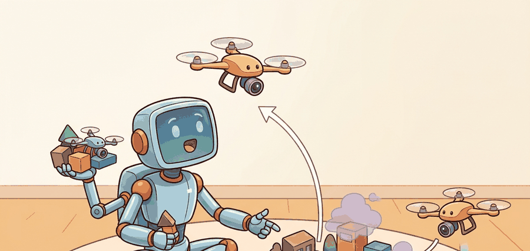

"Covering an area is mowing a lawn from the air: the hard part is missing nothing and counting it honestly."
A Careful Control Loop

This section assumes familiarity with path planning fundamentals from section 30.3 and the obstacle avoidance strategies introduced in section 47.3. The Voronoi partitioning and consensus protocols developed here recur in Part X alongside broader task-allocation and swarm-coordination frameworks in sections 49.2 and 49.3. Aerial safety constraints that bound the multi-drone policies covered here are examined in section 47.5.
A wildfire has jumped a ridge. Within minutes, four drones fan out over the burn perimeter, each claiming a sector, sharing a live coverage map, and handing off battery-depleted cells to freshly launched replacements. No human assigns routes. The fleet divides the area, avoids converging on the same hotspot, and certifies the perimeter before the fire reaches the next tree line. This is the payoff of principled multi-drone coordination: provable coverage guarantees, real-time deconfliction, and graceful degradation when agents fail. You will work through the Voronoi partitioning and consensus protocols that make this possible, and build the metrics that let you verify a fleet actually covered what it claimed.
This section develops coverage, inspection, and multi-drone coordination as a concrete embodied AI skill rather than a label. The core contract is: observe coverage grid, camera footprint, communication state, and battery reserve, allocate viewpoints and paths across agents, and judge the result with coverage completeness and duplicate-inspection rate.
For Coverage and inspection; multi-drone coordination, check the earlier frame, control, and model chapters against the exact interface used here: state variables, timing budget, action limits, and evaluation panel.
Aerial agents pay for every bad decision immediately. They are underactuated, energy-limited, wind-sensitive, and often safety-critical. For Coverage and inspection; multi-drone coordination, the decisive question is whether the loop can recover from two drones optimize local coverage and create unsafe convergence near the same structure.
Figure 47.4.1 turns coverage and fleet coordination into inspectable artifacts: area decomposition, assignment policy, communication state, deconfliction rule, battery budget, and coverage certificate.
Theory
Coverage planning asks for a path that sweeps a camera footprint over every point of a target region. The classic exact method is boustrophedon decomposition (the word means "as the ox plows", back and forth). The free region is split into cells with no obstacles inside, and each cell is covered by parallel sweep lines, called boustrophedon, or lawn-mower, passes, spaced by the sensor footprint width $w$. The drone flies one lane to the far edge, steps over by $w$, reverses, and repeats. For a convex cell of width $W$ the number of lanes is $\lceil W / w \rceil$, and the turns happen only at the cell boundary, which keeps the path efficient.
This approach has been deployed in practice. Skydio's commercial bridge and infrastructure inspection platform uses a variant of viewpoint-coverage planning in which the drone autonomously identifies structural faces, generates required camera poses, and sequences a path through them while maintaining a safe standoff distance. The system reports coverage as a percentage of required poses achieved, mapping directly to $\eta$ below. DJI agriculture spraying drones use the same boustrophedon structure but widen lane spacing to reduce flight time, accepting a small uncovered fraction and relying on overlapping spray cones to compensate. Both systems illustrate the same core trade: completeness versus battery endurance.
The success criterion is the coverage fraction: the area actually seen divided by the area that should be seen,
$$\eta = \frac{\lvert \text{covered cells} \rvert}{\lvert \text{target cells} \rvert}.$$
A complete plan reaches $\eta = 1$. Lane spacing controls the trade between $\eta$ and flight time: spacing equal to the footprint gives full coverage with no overlap in the ideal case, while spacing wider than the footprint leaves uncovered stripes ($\eta < 1$) and tighter spacing wastes battery on redundant passes. Real footprints depend on altitude and camera field of view, so coverage planning and altitude planning are coupled; flying higher widens $w$ and reduces lanes but lowers ground resolution. To make the stakes concrete: a single drone covering a 100-metre square field with a 2-metre footprint needs 50 lanes and roughly 18 minutes of flight, but adding a second drone and splitting the Voronoi partition cuts that to 9 minutes per drone, while a third drone brings it to 6 minutes. Fleet size, not algorithm cleverness, is the dominant lever on total mission time.
When computing lane spacing for boustrophedon sweeps, set it to w * (1 - overlap_ratio) rather than bare footprint width w. An overlap_ratio of 0.1 to 0.2 (10 to 20 percent side overlap) compensates for GPS and wind-induced lateral drift without a large battery penalty. In ArduPilot Mission Planner and QGroundControl's survey tool, this maps directly to the "Side Overlap" percentage field in the grid mission dialog. Skipping this buffer is the single most common reason a post-flight coverage map shows thin unscanned stripes even though the mission log shows $\eta = 1$.
Multi-drone coordination adds an assignment layer on top of single-drone coverage. The standard approach partitions the target region into Voronoi cells centred on each drone's current position: each drone owns the sub-region closer to it than to any other drone, so the partition adapts as drones move. Within its cell, each drone runs an independent boustrophedon sweep. When a drone's battery falls below a return threshold, it broadcasts a handoff request; a neighbour with sufficient reserve bids on the uncovered remainder using an auction protocol (each bidder submits an estimated completion cost, the lowest-cost bidder wins the cell). The critical constraint during reassignment is separation: two drones must not enter the same cell simultaneously while one is handing off and the other is arriving, so a short exclusion window is enforced via the communication channel. This three-layer structure (Voronoi partition, per-cell sweep, auction-based handoff) is what most research systems, including the multi-UAV coverage work by Scherer et al. (2015) and the distributed coverage framework in Schwager et al. (2011), implement at their core.
Algorithm: Voronoi-Partitioned Multi-Drone Coverage with Auction Handoff
Input: target region $\mathcal{R}$, fleet of $n$ drones with positions $\{p_i\}$, sensor footprint width $w$, battery threshold $\beta_{\min}$, communication graph $G$
Output: per-drone sweep paths $\{\pi_i\}$, coverage certificate $\eta$, handoff log $H$
- Compute the Voronoi partition $\{V_i\}$ of $\mathcal{R}$ centred on $\{p_i\}$, so each cell $V_i = \{x \in \mathcal{R} : \lVert x - p_i \rVert \leq \lVert x - p_j \rVert\ \forall j \neq i\}$.
- For each drone $i$, decompose $V_i$ into boustrophedon lanes of width $w \cdot (1 - \alpha)$, where $\alpha \in [0.1, 0.2]$ is the side-overlap ratio; set sweep path $\pi_i$ as the serpentine sequence over those lanes.
- Execute all $\pi_i$ in parallel; at each control step update the coverage grid $C$ by marking cells within the current camera footprint as seen.
- Monitor battery level $\beta_i$ for each active drone; when $\beta_i \leq \beta_{\min}$ drone $i$ broadcasts a handoff request containing its uncovered cell remainder $R_i \subseteq V_i$.
- Each neighbour $j$ with $\beta_j > \beta_{\min} + \Delta$ computes bid cost $c_{ij} = \lVert p_j - \text{centroid}(R_i) \rVert / v_j + \theta_{ij}$, where $\theta_{ij}$ is estimated sweep time and $v_j$ is cruise speed; submit bid to $i$.
- Drone $i$ selects winner $j^* = \arg\min_j c_{ij}$, transfers $R_i$ and its partial coverage map to $j^*$, then returns to base.
- Enforce a separation exclusion window $\delta t = \lVert p_i - p_{j^*} \rVert / v_{\max}$: drone $j^*$ holds at boundary of $V_i$ until $\delta t$ has elapsed to prevent simultaneous cell occupancy.
- Update Voronoi partition with revised positions; recompute $\nabla_p \mathcal{L}$ (the centroidal Voronoi gradient) if load imbalance across remaining drones exceeds a rebalance threshold $\epsilon$.
- Replan boustrophedon path for $j^*$ over $R_i$ using the inherited coverage grid to avoid re-sweeping already-seen lanes.
- After all cells reach $\eta_i = 1$ or all drones are recalled, compute global coverage $\eta = |\text{covered cells}| / |\text{target cells}|$ and append per-drone flight time, duplicate-inspection rate, and handoff count to $H$.
Coverage and multi-drone coordination depend on area partitioning, vehicle state, communication delay, collision constraints, battery reserve, and task handoff. The evidence chain should show whether lost coverage came from path assignment, localization drift, radio dropout, or conservative separation rules.
Worked Example
Simulate a boustrophedon sweep over a 10x10 grid and measure the coverage fraction. Lane spacing equal to one cell (every row swept) should give full coverage; doubling the spacing should leave half the area unseen. Running both makes the spacing-versus-coverage trade concrete.
# Boustrophedon (lawn-mower) coverage over a 10x10 grid.
def boustrophedon(N, lane_step):
covered = [[False] * N for _ in range(N)]
path = []
for row in range(0, N, lane_step): # one lane per swept row
cols = range(N) if (row // lane_step) % 2 == 0 else range(N - 1, -1, -1)
for col in cols: # serpentine direction per lane
path.append((row, col))
covered[row][col] = True
seen = sum(cell for r in covered for cell in r)
return path, seen / (N * N)
N = 10
path, eta = boustrophedon(N, lane_step=1) # spacing = footprint
print(f"lanes touch every row : path length {len(path)}, coverage = {eta:.0%}")
print(f"first turns : {path[8:13]}")
_, eta_wide = boustrophedon(N, lane_step=2) # spacing = 2x footprint
print(f"spacing doubled : coverage = {eta_wide:.0%} (stripes missed)")Expected output: a full-coverage path at unit spacing and a degraded coverage fraction when the lanes are spread out. The coverage fraction is the evidence field: report it alongside flight time, because a plan that finishes faster by widening lanes is only a win if $\eta$ still meets the inspection requirement.
For Coverage and inspection; multi-drone coordination, the hand-built record exposes the flight fields; PX4, ROS 2, MAVLink, gym-pybullet-drones, Aerial Gym, and safe-control-gym should preserve the same schema.
Practical Recipe
- Write the skill contract: observable variables, action interface, metric, allowed recovery actions, and stop conditions.
- Build the smallest baseline that can fail in an interpretable way.
- Run the maintained library version with the same inputs, scenarios, and metric code.
- Add one perturbation aimed at the expected failure: two drones optimize local coverage and create unsafe convergence near the same structure.
- Save one artifact containing config, seeds, logs, summary metrics, and two representative traces.
The planned coverage fraction is not the achieved coverage fraction. Localization drift shifts each lane sideways, so the real footprints no longer tile the area and thin gaps open between passes even though the plan reported $\eta = 1$. Wind pushes the vehicle off the lane in the same way. The honest metric is measured from the logged poses and actual footprints, not from the nominal path. When two drones share a region, the mirror failure is double counting: overlapping assignments inflate apparent coverage while wasting battery, so track duplicate-inspection rate alongside $\eta$.
A robotics team using coverage and inspection; multi-drone coordination should log not only final success, but intermediate observations, chosen actions, controller status, and recovery events. The logs reveal whether the method is solving the task or merely passing the easiest episodes.
Treat coverage and inspection; multi-drone coordination like a control-room label. If the label does not tell a future debugger what moved, what sensed, or what failed, it is decoration rather than engineering knowledge.
For Coverage and inspection; multi-drone coordination, treat frontier claims as hypotheses until they expose enough detail to reproduce the result: data boundary, embodiment, controller interface, evaluation panel, and failure cases.
Can you name the observation, state estimate, action, success metric, and most likely failure mode for coverage and inspection; multi-drone coordination? If not, the system boundary is still too vague.
Coverage and inspection; multi-drone coordination becomes robust when the chapter separates three claims. The conceptual claim explains why the skill should work. The systems claim explains which interface changes. The evidence claim records which same-panel metric would convince a skeptical builder.
For Coverage and inspection; multi-drone coordination, keep flight physics, airspace constraint, battery state, timing, wind, and safety monitor inside the evidence artifact rather than in a post-run explanation.
| Tool or Library | Role in the Topic | Builder Advice |
|---|---|---|
| PettingZoo-style multi-agent wrappers and PX4 missions | Main practical route for Coverage and inspection; multi-drone coordination | Use it after the baseline contract is explicit and keep the same artifact schema. |
| ROS 2 logs | Interface and timing evidence | Record observations, commands, controller status, and verifier events together. |
| Same-panel evaluation script | Construct-matched comparison | Compare methods only when metrics are co-computed on one scenario panel. |
For Coverage and inspection; multi-drone coordination, the coordinate-frame link is operational: every artifact should name frame, timestamp, units, safety constraint, and the downstream evaluator that will consume it.
Create one scenario for Coverage and inspection; multi-drone coordination, run the baseline and the PettingZoo-style multi-agent wrappers and PX4 missions route on the same inputs, then label each failure as perception, state, planning, control, timing, data coverage, or evaluation.
When Coverage and inspection; multi-drone coordination fails, do not collapse the whole method into one score. Assign the failure to a subsystem, rerun one perturbation that isolates the suspected cause, and keep the trace as a reusable diagnostic case.
Section References
Core references for Coverage and inspection; multi-drone coordination: MuJoCo, Drake, ManiSkill, ROS 2, MoveIt, CARLA, nuScenes, Waymo Open Dataset, tactile sensing, locomotion, manipulation, and AV evaluation literature.
Use these sources to verify dynamics, contact, sensors, planning, embodiment constraints, and evaluation panels.
Coverage and inspection; multi-drone coordination is useful when it makes the perception-action loop more reliable, not when it merely adds a more impressive model name.
Design a same-panel experiment for Coverage and inspection; multi-drone coordination. Specify the scenario set, the baseline, the PettingZoo-style multi-agent wrappers and PX4 missions library route, the metric computation, and one perturbation that targets this failure: two drones optimize local coverage and create unsafe convergence near the same structure.